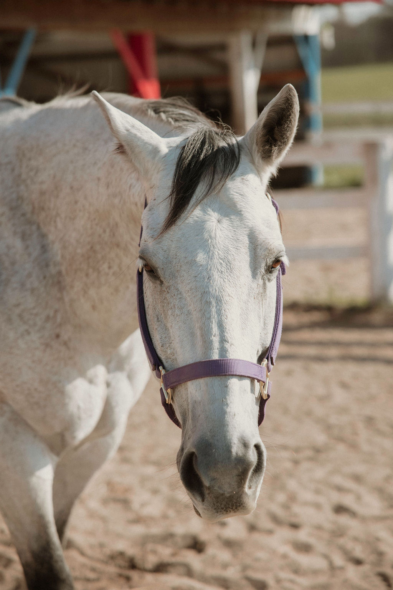
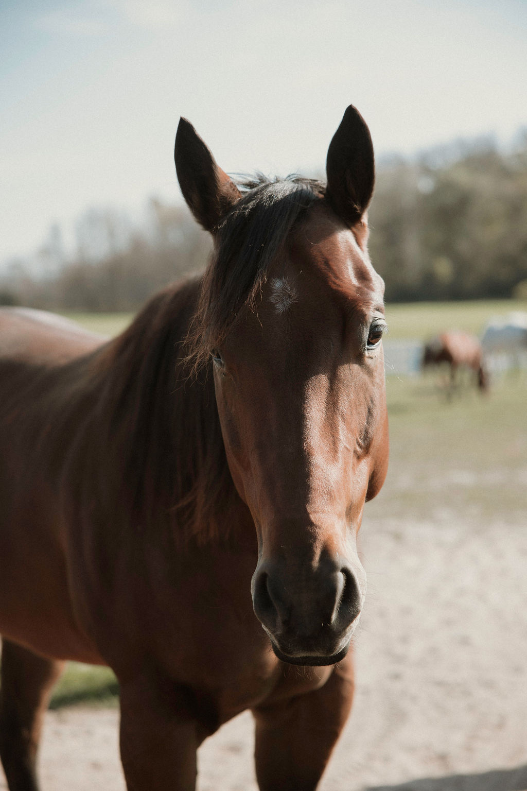
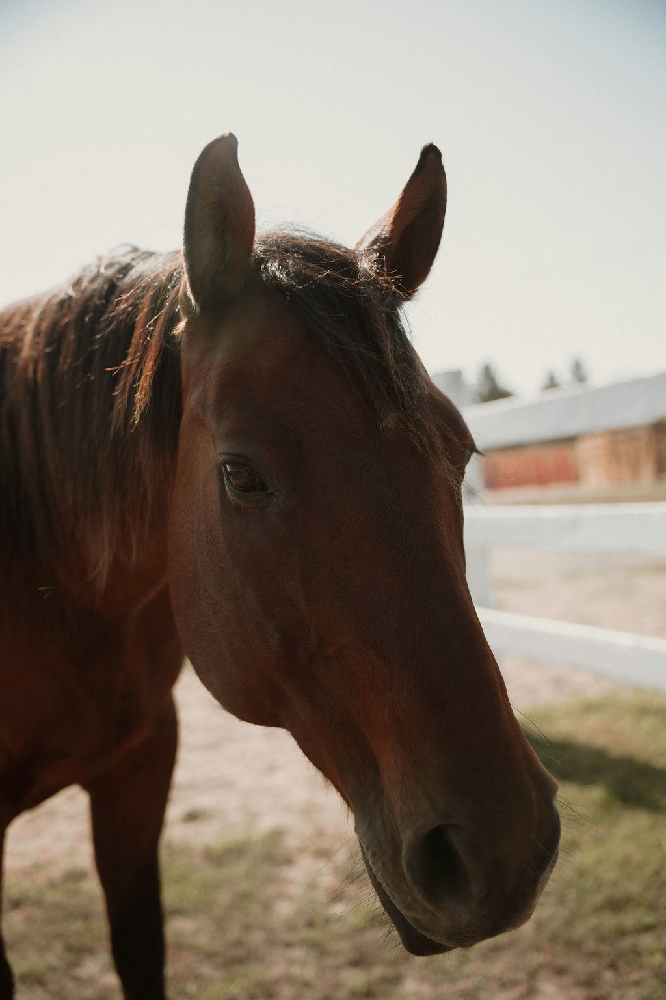

Our Mission
At Guardian 4 Heroes, we are dedicated to supporting the mental wellness of our veterans through compassionate and empowering equine-facilitated psychotherapy (EFPT). We provide a safe, therapeutic environment where veterans and first responders can heal, grow, and rediscover hope.
Our Purpose
Founded by Sara Peterson, a dedicated veteran advocate, our nonprofit strives to create an environment of safety, peace, and healing for our veterans. Our purpose is to provide a space where veterans and first responders can connect with our horses, develop new coping skills, and find renewed strength for the journey ahead.

Sara Peterson
Founder & Veteran AdvocateWith over 10 years of experience advocating for veterans, Sara founded Guardian 4 Heroes to empower veterans and first responders through transformative equine therapy. Her vision creates an environment where healing and growth are possible for everyone who walks through our gates.
What Is EFPT?
Equine-Facilitated Psychotherapy Training involves engaging with horses to rebuild confidence, explore boundaries, and enhance self-esteem. Horses, attuned to human emotion, offer a unique and powerful form of feedback and companionship. Our certified EFPT sessions are designed to meet each participant’s unique needs and foster meaningful progress.
Support Our MissionMeet the Crew
Our Equine Partners

Nelly Bell
A 12-year-old Mustang mare, Nelly sometimes pretends she doesn’t want to be brushed or touched. But she'll always come back for snuggles and is constantly aware of your presence, ensuring everyone feels safe.

Rocket
The biggest of our bunch, both in size and personality! He loves to goof around and craves attention. You’d never guess this spirited horse is 26 years old—he’s truly ageless at heart.

Drifter
Drifter may seem a bit aloof at first, but once he gets to know you, his warm personality shines through. At 20 years old, all he wants to do is please, and he absolutely loves brushing time.

Smokey
Our biggest boy at 17.1! This 10-year-old loves attention and is always checking everyone's pockets for treats. He will happily stand for hours just to be brushed.

Frank
Our baby at 4 years old. He ties Smokey in height but is leaner and more muscular. Very inquisitive of obstacles, he loves showing off his skills around the agility courses.

Sarge
At 17, he finds his way to the middle of the herd and inserts himself into any conversation or brushing session he can. He doesn’t let his asthma or allergies slow him down!

Maverick ("Mav")
It is with the heaviest of hearts that we say goodbye to our sweet Mav. His bio always said he was "always there when you’re in need of a hug," and that could not have been more true. Mav was a 12-year-old rescue who, despite his own challenges, had a boundless capacity for love.
He was a living example of his own life lesson: "proving that love and bravery come in many forms." His quiet strength, gentle nuzzles, and unconditional hugs were a gift to us all. He was a true healer, and his spirit will be deeply missed in our fields and in our hearts.